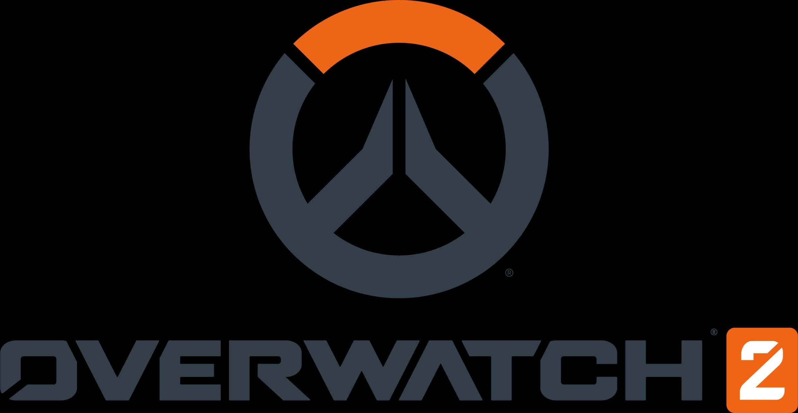

Valorant
I really like Valorant because it’s the game that truly got me into
PC gaming. I have played FPS (First-Person Shooter) games ever since
I was little, and when I saw this game coming out, I really wanted
to build a computer. This game gave me so many great memories and
was the reason I fell in love with PC gaming.

Overwatch 2
This game introduced me to competitive FPS hero shooters. I love
games with characters that have abilities, and I also love FPS
games, so when this game came out, it felt like something I had been
secretly waiting for but never realized I wanted. Overwatch is the
game that got me hooked on competitive gaming, and even though it’s
in a rough state now with all the new updates, it will forever hold
a spot in my heart.
article

Apex Legends
I love the movement and gunplay in Apex because they feel incredibly
smooth, making every fight an adrenaline rush. Every legend brings
something unique to the table, and mastering their abilities adds a
whole new layer to the “Battle Royale” genre. Pulling off an insane
escape, dodging and weaving through enemies, or landing multiple
shots in a clutch moment is one of the most satisfying feelings in
gaming.
Rainbow Six Siege
I’m not the greatest at this game, but I think that’s why I like it
so much. In most competitive games, I end up trying to learn
everything, but when I do, it takes away some of the fun and adds
more stress and frustration. Sometimes, it’s nice to just play a
game with friends purely for fun, without worrying about ranking up.

Fragpunk
The wildcard modifier system adds an amazing twist to traditional
team shooters. I also love the sudden-death twist, where both teams
are thrown into a crazy 1v1 scenario that really tests your skills
under pressure. It’s probably the most fun I’ve ever had playing an
FPS game.
Overcooked 2
This game is insanely fun to play with friends and significant
others. My girlfriend and I always have a blast, whether we’re
laughing at each other’s mistakes or accidentally messing each other
up. The levels are pure chaos, designed to build stress and
excitement in the best way. This game is definitely not for the
faint of heart, as it causes so many fights and arguments.